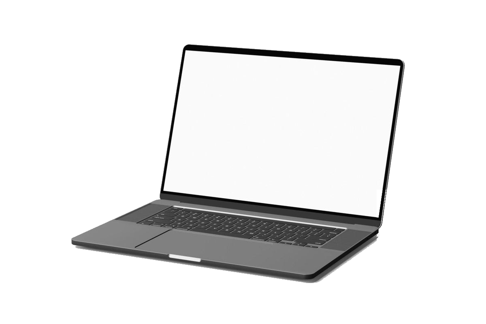
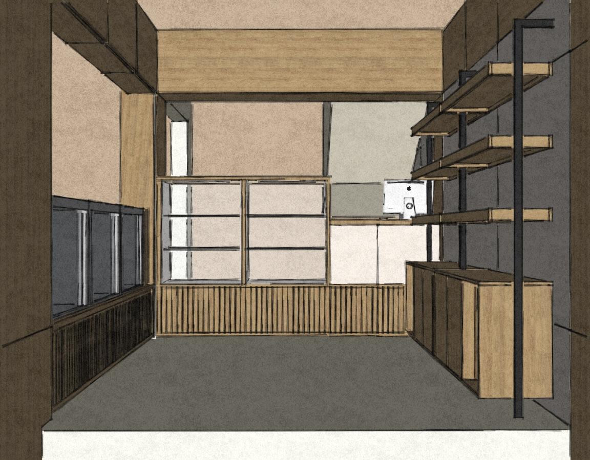
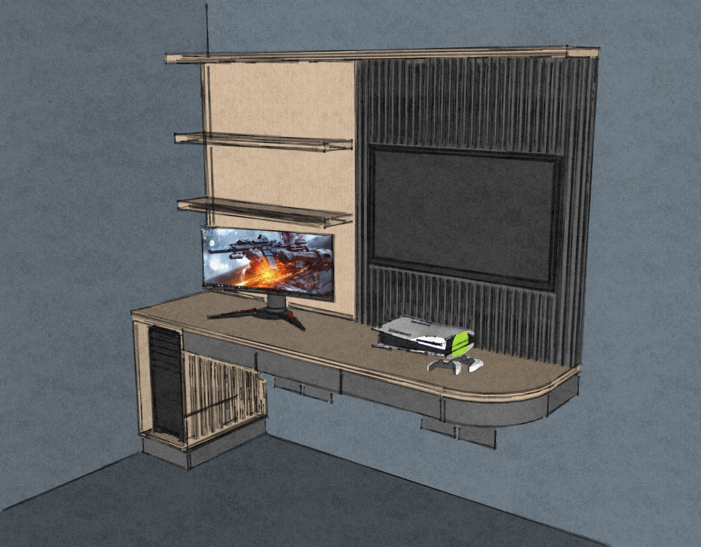
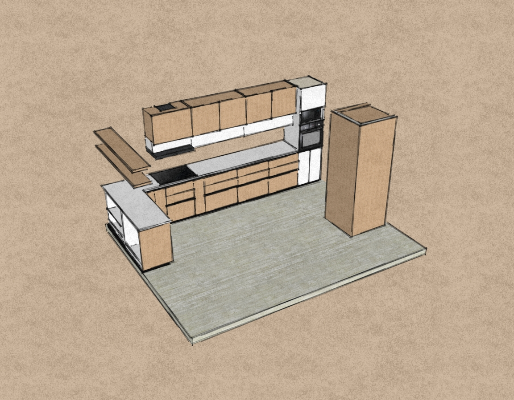
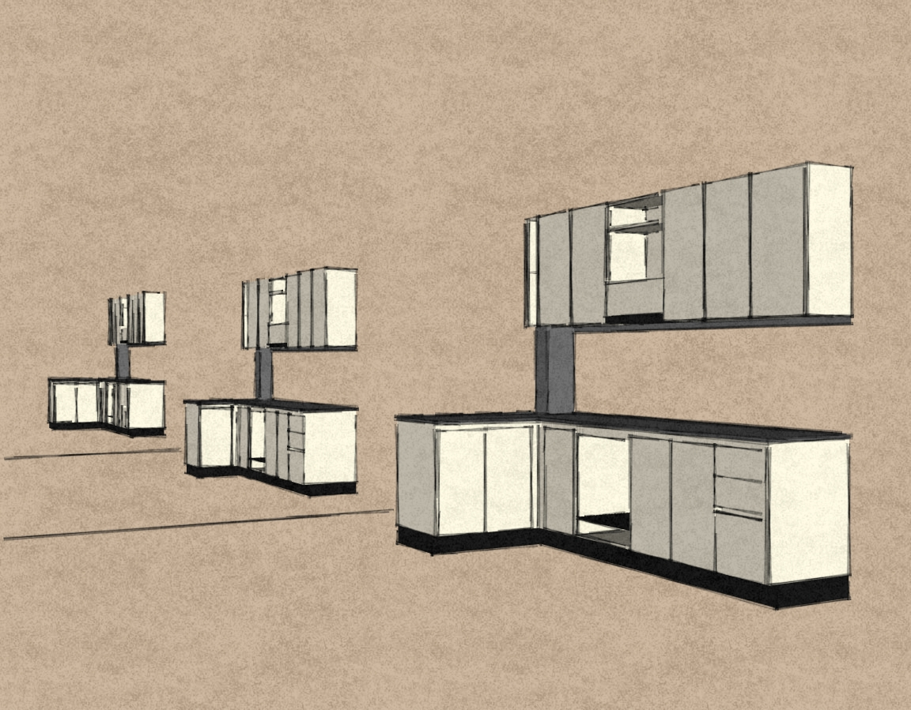
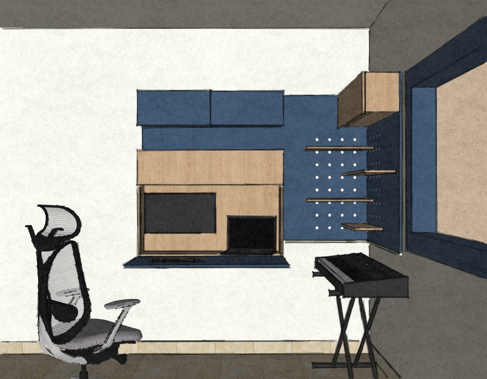

Diseñador industrial (UNLP) — La Plata, Argentina
Desarrollo sistemas
de mobiliario /
proyectos a medida.
Mi paso por la producción, la gestión de materiales y la instalación me permite crear proyectos donde el diseño y los procesos productivos se encuentran. Del concepto a la materialización.






Experiencia laboral
Recorrido transversal en el sector
Taller → Prearmado → Diseño → Venta → Asesoramiento. Cada etapa aportó un conocimiento crítico del proceso constructivo y comercial. La integración de estas experiencias es el valor fundamental que aporto a cada proyecto.
Del plano a las máquinas
OSLO · Metalúrgica
Dibujo técnico en AutoCAD y operación de máquina de corte láser: documentación técnica pensada para la máquina que la va a ejecutar. Otros procesos: plegado de chapas, soldadura y corte plasma.
Taller e instalación
ML PLAK · Mueblería
Instalación y prearmado de muebles a medida. Acá aprendí, cómo se comporta el material real, qué tolerancias perdonan y cuáles no, y qué errores de diseño se pagan en obra.
Diseño de mobiliario
CUBES · RIMU
Diseño de mobiliario y validación directa con clientes: traducir requerimientos en propuestas concretas y ajustarlas contra feedback real. Diseño pensado para su fabricación en CNC, con optimización de tableros y resolución de cortes curvos. Softwares: SketchUp, Rhinoceros, AutoCAD, D5 Render, OpenCutList.
Venta y asesoramiento técnico
El Emporio del Terciado · 2,5 años
Resolución técnica y comercial de proyectos de mobiliario para profesionales activos: estudios de interiorismo, diseñadores y carpinteros. Asesoramiento en materiales, optimización de despieces y especificación de herrajes de distintas marcas (Grupo Euro, Häfele, Ducasse). Acá pude pulir la parte comercial: cómo se cotiza, se vende y se decide un mueble en el mercado.
Proyectos freelance
6 años · en paralelo
Diseño, representación 3D fotorrealista y desarrollo constructivo para producción. Proyectos de mobiliario y producto resueltos de principio a fin: concepto, modelado, renderizado, planos y despieces listos para CNC, corte láser o impresión 3D.
Capacidades técnicas y propuesta de valor
Soluciones — 06
Optimización constructiva
Proyectos concebidos desde el inicio para su producción eficiente. Desarrollo de despieces precisos y análisis de rendimiento de materiales que minimizan los tiempos de taller, reducen el desperdicio y anticipan los imprevistos de la etapa de montaje.
Visualización y validación de proyecto
Modelos en alta fidelidad y renders fotorrealistas que permiten previsualizar el mobiliario en detalle antes del primer corte. Una herramienta clave para la toma de decisiones estéticas y comerciales.
SketchUp · AutoCAD · Rhinoceros · D5 Render · KeyShot · Ilustrator
Materiales y herrajes
Conocimiento aplicado de placas, terminaciones y herrajes de las principales marcas del mercado (Grupo Euro, Häfele, Ducasse). Especificación correcta desde el diseño para evitar reemplazos y sobrecostos en obra.
Prototipado y manufactura digital
Integración de procesos aditivos y sustractivos: impresión 3D, ruteado CNC, corte láser y plegado. Validación formal, ergonómica y funcional de componentes mecánicos y de mobiliario mediante prototipos físicos.
Investigación de tendencias
Análisis continuo del mercado, nuevos materiales y tendencias de habitabilidad. Identificación de oportunidades de diseño para mejorar la competitividad comercial de líneas de mobiliario, en serie y a medida.
Intermediación entre rubros
Capacidad de unificar criterios entre la arquitectura, la producción en taller y el sector comercial. Dominio del lenguaje técnico de cada disciplina para actuar como nexo, cuidando que el diseño original se ejecute con fidelidad en la obra.
Selección de trabajos 2026
Proyectos — 06
Comercial
Local comercial — Panadería Green Garden
Equipamiento integral para local gastronómico: Revestimientos de pared, mostradores, exhibidores y espacios de guardado. Placas utilizadas : Cachemira (Egger) y Petiribí (San Juan)

Residencial
Escritorio gamer con curva
Escritorio a medida con desarrollo de superficie curva, pensado para mejorar la circulación del espacio. Cableado oculto detrás del varillado y módulo con calado para el CPU.
Residencial
Cocina residencial
Diseño y desarrollo de cocina a medida: distribución, materiales, planos de fabricación + render.
Placas utilizadas: Hickory y Blanco Laca (Egger)
Herrajes: Bisagras y Correderas (Grupo Euro)
Obra / Desarrollo
3 cocinas genéricas para edificio
Desarrollo de tipologías repetibles para obra: estandarización de módulos, los nichos contaban con variaciones en las medidas, se ajustó para cada caso.

Residencial
Escritorio plegable
Diseño resuelto en solo 2 placas por limitaciones de presupuesto: espacios de guardado y estantes que habilitan distintas configuraciones, el escritorio plegable cuenta con cerradura para aportarle seguridad.
Corporativo
Escritorios para empresa de ingeniería
Gestión de producción de herrería, nos propusieron un diseño estándar y le dimos otra impronta para modernizar el espacio. Caños de 70x30x1.6
Contacto
Trabajemos juntos
en tu proyecto.
Colaboro con estudios de arquitectura, interiorismo y mueblerías resolviendo el mobiliario de principio a fin: diseño, documentación y despiece listos para su producción.
© 2026 Nahuel Valdez — Diseñador industrial · La Plata, Buenos Aires, Argentina